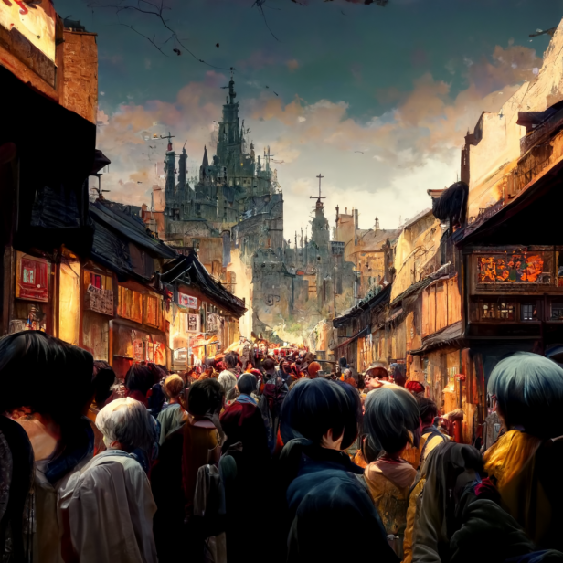
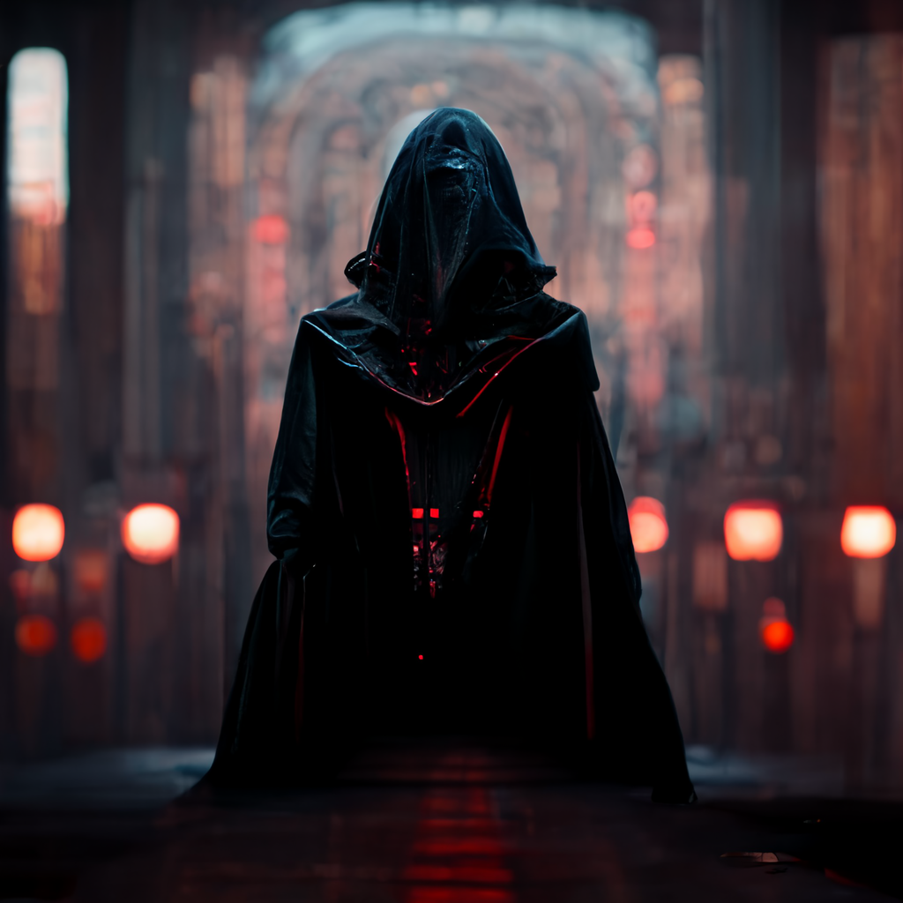

Tenho testado nos últimos dias a ferramenta de criação de artes por inteligência artificial Midjourney, concorrente do famoso DALLE-2 (que também estou testando para outros posts), e confesso que estou muito bem impressionado com os resultados obtidos, então resolvi escrever esse texto para ensinar a usar esse app, que é tão divertido quanto poderoso.
A boa notícia é que você pode fazer isso agora mesmo, pois não é mais preciso ter um convite especial, basta ter uma conta no Discord. Pois é, no final de julho, o Midjourney abriu sua versão beta para qualquer usuário. Assim, é só ler esse post para aprender a criar a sua conta e poder avaliar de graça o Midjourney.
Além disso, também vou dar algumas dicas, umas básicas, outras mais avançadas, mas todas bem úteis.
O que é o Midjourney?
Resumindo bem, o Midjourney é uma ferramenta que traduz em imagens perguntas em texto através de seus algoritmos. A empresa lançou recentemente a 3a geração de seus algoritmos de criação de imagens, que melhorou ainda mais a qualidade das suas renderizações.
anime alley of a crowded medieval town - Upscaled by @Lew
O app funciona dentro do Discord, e de forma coletiva, ou seja, você acompanha as criações de todos que estiverem no mesmo canal. Em uma entrevista ao The Verge, o fundador do Midjourney, David Holz, explicou o motivo para não criar um app próprio.
“Muita gente nos pergunta, por qual motivo vocês não fazem um app para iOS que cria uma imagem para você? Mas pessoas querem fazer coisas juntas, e se você fizer isso no iOS, você terá que criar sua própria rede social. E isso é bem difícil. Então se você quer sua própria experiência social, o Discord é realmente ótimo.”
David Holz, fundador do Midjourney
Crie sua conta de avaliação no Midjourney
Para começar a usar o Midjourney na hora em que você terminar de ler esse post. Para isso, você vai precisar de uma conta válida do Discord. Se já tiver uma, é só entrar no servidor oficial do Midjourney através desse link.
Vale lembrar que a conta de avaliação oferece 25 buscas gratuitas para você testar, e a partir daí, é preciso pagar uma assinatura mensal de US$ 10 (com 200 buscas) ou US$ 30 (com buscas ilimitadas). Nesse número estão incluídas as variações que você pedir ao Midjourney, assim como as imagens com maior resolução.